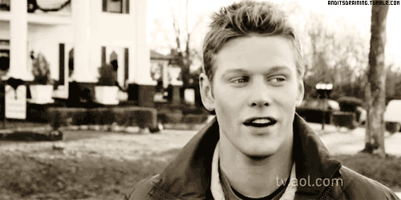

Zach Roerig

- Zachary George Roerig was born in Montpelier, Ohio in February 22, 1985
- Zach attended the Barbizon School of Modeling in Cleveland and went on to participate in the International Model and Talent Association where he signed with his late talent manager.
- He graduated Montpelier High School where he played both football and was also a wrestler.
- As an actor, he is best known for roles of Casey Hughes on As the World Turns, Hunter Atwood on One Life to Live and Matt Donovan on The Vampire Diaries.